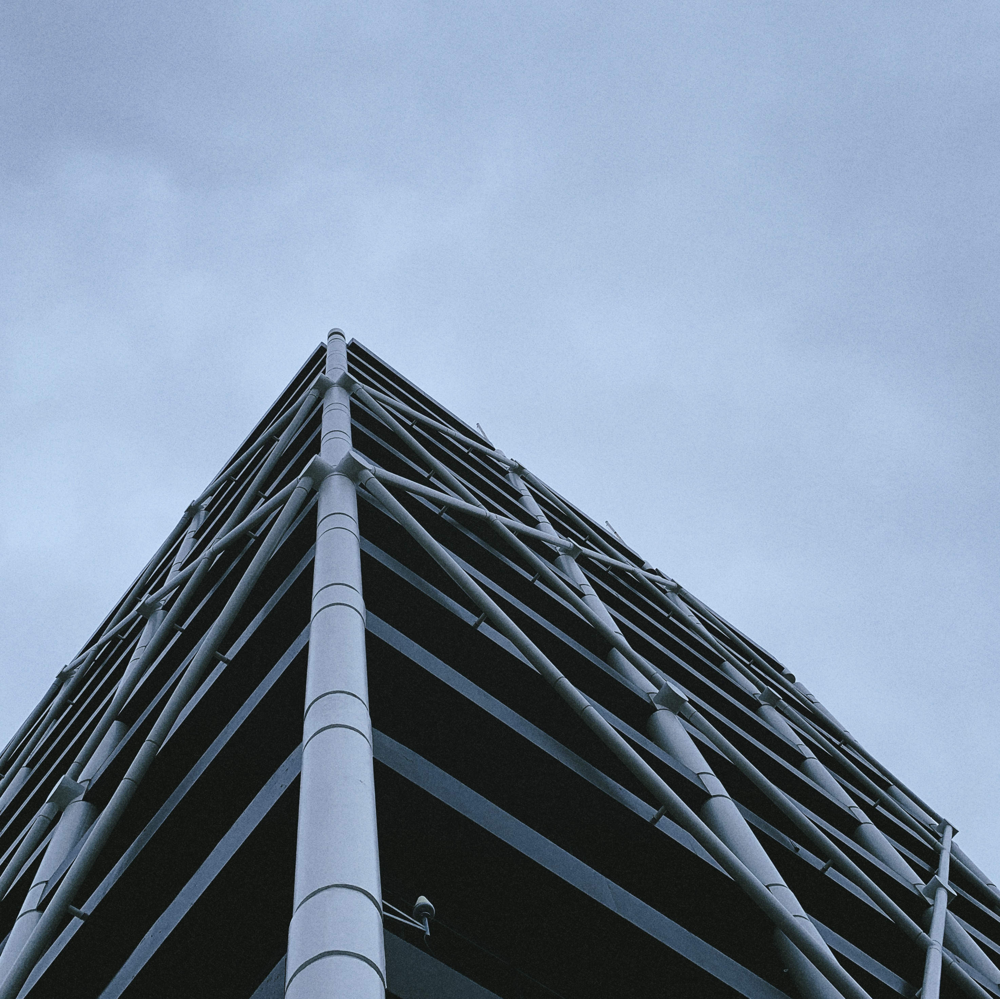

Auckland is the city that I have felt most part of. Maybe it's because of its kind people, maybe because their interculturality, maybe because it's located in the antipodes of where I was born, maybe because it has more trees than concrete, maybe because it's sitting on 48 volcanoes... I don't know, it's the whole of everything that makes me love this place with all my strength. Hard to reflect how great Auckland is, but I'm going to try.
This page contains photos related to Auckland that I did and seems relevant to me. It's constantly updated with new material and they are usually large files, so I apologize (nah, I don't) if I consume your data.
In this restaurant you pay whatever you want.My favorite (and hidden) bar from Auckland.Free Indian food on Queen Street.Karanghape Road it's always better at night.This is so Auckland: boats, great people, LGTBQ+, seagulls.Royal Oak zone.Auckland it's Sky Tower, Sky Tower it's Auckland.Sky Tower loves everybody.captionThis is still in the city.captioncaptionTrees > concrete.Auckland = space.captioncaptioncaptionHappy New Year!captionThe best places are always hidden.captioncaptioncaptioncaptioncaptionAuckland War Memorial Museum.The cloudy City of Sails from Harbour Bridge.The sunny City of Sails from Harbour Bridge.captioncaptioncaptioncaptionParnell area.It's my tree of meditation, but sometimes I have to share it.Just look for the Sky Tower and everything will be fine.City of Sails, of course.captionSunshine on Mt. Eden area.Victoria Park.captioncaptioncaptioncaptioncaptionPonsonby Street.captioncaptioncaptioncaptioncaptioncaptionAnamorphic port.Anamorphic Queen Street.captioncaptioncaptionThis is the crater of a volcano.captionWork in progress.captioncaptionI'm obssesed with this streets.

captionHONK!Auckland from Mt. Eden summit.City of Sails.City of Sails.City of Sails.City of Sails.Victoria Street + Saturday night.